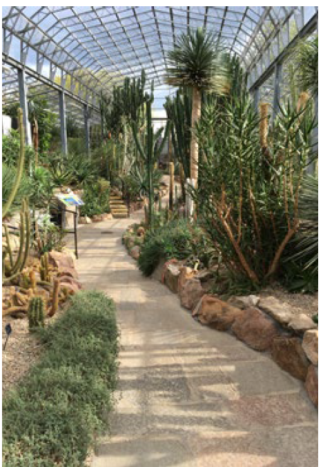

The David Welch Winter Gardens These are one of Europe’s largest indoor botanical gardens containing many rare and exotic plants on show from all around the world. Free admission, see first page for opening times. On entering, the visitor is greeted by a host of tropical wonders, colourful display beds and important economic crop plants including banana, coffee, cocoa and tea. The hibiscus with its large colourful trumpet shaped flowers has a truly stunning appearance. The Tropical House contains plants mainly from the moist forests of tropical South America, giving the feeling of being in a tropical jungle. It contains plants such as bromeliads and orchids plus gingers and aroids from Asia. The character of the vegetation is dominated by the versatile Bromeliaceae pineapple family. Plants from dry lands throughout the world – from Central America to Southern Africa, from Arabia to Madagascar can be found in the Arid House. This has one of the largest collections of cacti and succulents in Britain. The oldest specimen is the Echinocactus grusonnii or barrel cactus at more than 100 years old. The sight of more than 30 hanging baskets in their full glory in the Victorian Corridor is a must for any visitor over summer months. The magnificent Temperate House with its cascading water feature contains plants from warm temperate regions of the world, especially Australia, New Zealand, South Africa and the Mediterranean. Ferns were among the first land plants 400 million years ago and the Fern House display is captivating with the natural setting beside water and the exhibitions of foliage and leaf texture.
